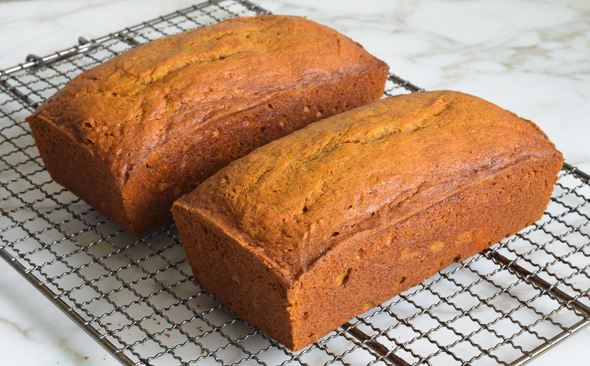

Nathan's Pumpkin Bread

Description
This recipe is my staple for the fall.
I don't really like pumpkin flavored things, but one time in high school,
my friend Ilenna made me some pumpkin bread.
Since then, I've been really enjoying making it! Last Thanksgiving,
I'm pretty sure I baked 18 loaves because my family and friends were addicted!
I've adapted and adjusted a couple recipes I found online,
but I haven't made it since, so hopefully it tastes just as good as before.
I will definitely be making them this season!
- Servings: 2 loaves
- Cook Time: 65 minutes
Ingredients
- 2 cups all-purpose or bread flour
- 1/2 teaspoon salt
- 1 teaspoon baking soda
- 1/2 teaspoon baking powder
- 1 teaspoon ground cloves
- 1 teaspoon ground cinnamon
- 1/4 teaspoon ground ginger
- 1.5 sticks unsalted butter, softened
- 2 cups sugar
- 2 large eggs
- 1 can (15-oz) Libby's pure pumpkin puree
Instructions
- Preheat oven to 325F and set oven rack in the middle position.
Generously grease two 8x4-in loaf pans with butter and dust with flour.
- In a medium bowl, combine flour, salt, baking soda, baking powder,
ginger, cinnamon, and nutmeg. Mix until well combined; set aside.
- In a large bowl, beat the butter and sugar on medium speed until just blended.
Add the eggs one at a time, beating well after each addition.
Continue beating until very light and fluffy, a few minutes. Beat in the pumpkin.
The mixture might look grainy/curdled at this point -- that's okay.
- Add the flour mixture and mix on low until combined.
- Turn the batter into the prepared pans, dividing evenly, and bake for 65-75 minutes.
Let the loaves cool in the pans for about 10 minutes, then turn out onto a wire rack to cool completely.
Fresh out of the oven, the loaves have a delicious, crisp crust. If they last beyond a day,
you can toast individual slices to get the same fresh-baked effect.